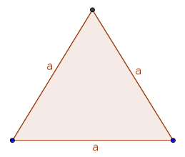
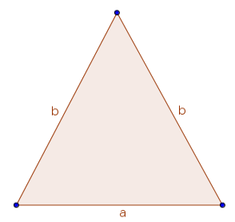
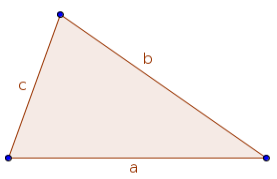

A triangle is a closed figure made up of three line segments.
A triangle is a polygon with three edges and three vertices.
It is one of the basic shapes in geometry.
A triangle with vertices A, B, and C is denoted.
And of the trilateral figures: an equilateral triangle is that having three equal sides, an isosceles (triangle) that having only two equal sides, and a scalene (triangle) that having three unequal sides.
  WELCOME TO RAYB'S TRIANGLE-TRACKER.HELPS YOU DETECT THE TYPE OF TRIANGLE YOU ARE ABOUT TO CONSTRUCT BY KEYING IN THE MEASUREMENTS AND RUN, THE RESULTS DISPLAYED IS THE TYPE OF TRIANGLE DESCRIBED BY YOUR MEASUREMENTS.... FEEL FREE AND HAVE LOTS OF FUN!!